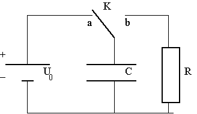
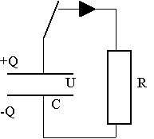
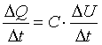
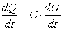
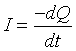
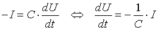
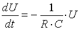
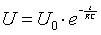

fig.1
Aflade- (og oplade-) kredsløbet ses på fig.1
En spændingskilde (f.eks. et 9-volt element) benyttes til opladning af kapacitoren C (vippekontakt K i stilling a). Når vippekontakten K trykkes ned (til stilling b), vil kapacitoren aflades gennem modstanden R. Spændingsforskellen over kapacitoren måles som funktion af tiden t.

fig.2
Kapacitorligningen (1) giver sammenhængen mellem elektrisk ladning Q på kapacitorens positive plade og spændingsforskellen U mellem pladerne:
1) Q = C·U
I opstillingen på fig. 2 vil ladningen Q på kapacitorens positive plade løbe gennem resistoren R over på den negative plade - og spændingsforskellen vil gradvis nærme sig 0.
I et lille tidsrum Dt, vil en lille ladningsmængde overføres fra den positive plade til den negative. Kaldes ladningstilvæksten på den positive plade for DQ, er DQ ifølge ligning (1) bestemt ved:
DQ = C ·DU
Divideres på begge sider af lighedstegnet med Dt, fås:

Lader vi Dt gå mod 0, får vi:

Hvis strømmen I regnes positiv i pilens retning på fig. 2, er

,minustegnet skyldes, at ladningstilvæksten dQ er negativ! Indsættes I fås:
2)

Vi benytter nu Ohms 1. lov U = R·I, som sammen med (2) giver
3)

Løsningen til denne ligning er
4)

(dette kan vises enten ved at differentiere (4) og indsætte i (3) - eller direkte ved at integrere (3)). Ligningen (4) siger altså, at kapacitorspændingen U aftager eksponentielt med tiden t (fra værdien U0) til tiden t = 0).
Resistansen R (se fig. 1) skal have værdien ca. 1 MW. Denne måles med et ohm-meter, og værdien noteres. Denne resistor skal ikke udskiftes under øvelsen. To forskellige kapacitorer C1 og C2 (ca. 25 mF og ca. 40 mF) benyttes i opstillingen på fig. 1: først skal (t, U)-grafen for C1 og C2 måles, dernæst skal de tilsvarende grafer for serie- og parallelforbindelserne måles.
Opstillingen vist på fig. 1 laves med kapacitor C1 indsat som C. Følg diagrammet nøje!
Spændingen over kapacitoren måles ved at forbinde de to indgange på kapacitoren til voltmeter med serielt interface. Målingerne styres vha. programmet Datalyse.
Der laves forsøg med hver enkelt kapacitor og med serie- og parallelforbindelsen mellem de to kapacitorer!
Vis, at ligning (4) er en løsning til ligning (3).
Hvordan kan man se på (t, ln(U))-grafen, om spændingen aftager eksponentielt?
Beregn vha. de målte (t, ln(U))-grafer kapacitanserne for C1 og C2 og disses serie- og parallelforbindelse. I beregningerne indgår naturligvis den målte værdi for R.
Ved hjælp af de fundne værdier for C1 og C2 skal du beregne erstatningskapacitanserne for serie- og parallelforbindelsen. Stemmer disse med de målte?
Når man som her har valgt (t, ln(U))-graf giver Datalyse ved lineær regression forskriften af formen U = U0·e-k·t. Se resultatet i memoen. Herefter beregnes kapacitansen let idet k= 1/(R·C).